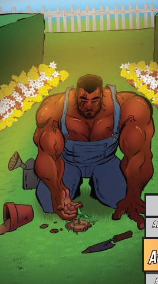

P2
Powerhound_2000
2022-04-26 14:09 UTC
#1
If they keep cutting heroes from DE at the rate they are, we’ll have tons of room for new characters!
So I’ve totally forgotten about Postal and Guise-Cat, and mostly about Casanova (Xander Groovitation, right?). What’s the main episode for them so I’m not totally lost listening to this?
I just relistened to the third Create-a-Thing, so I’m back up to speed on Pool Shark and Hedgelord.
Thanks in advance!
P.S. This is assuming there ever was an episode about them, which I’m beginning to doubt after that intro where C&A were basically gaslighting us. 


Only Casa Nova had been discussed at any length in an episode with this one
I believe they’re primarily discussed in The Guise Book.
I think they were referring to where those characters were talked about in the podcast.
I know, I probably should have labeled my link better… Hopefully it’s more clear what it leads to now.
I was, but it sounds like there’s little to no info on most characters in the podcast, especially villains. Concealin’ Cary was mentioned in the episode where Pool Shark and Hedgelord were created, but it was still up in the air at that time whether she’d be a hero or villain.
I’m not very likely to get The Guise Book, as I have yet to find an RPG group since moving recently. Been more focused on Definitive Edition when I can convince folks to play.
Wish there could be a Letters Page overview episode for some of these, like they did for Daybreak. I understand wanting to maintain some intrigue to sell a new product, though.
I’m looking forward to the DE Naturalist reveal, because there are SO MANY snoots to boop.
Oh boy do I feel sorry for anyone who hasn’t seen the Guise Book yet. c.c They need to start doing character episodes whenever a new RPG book comes out.
Pretty sure the song goes “It’s always winter but never Christmas”, thank you very much.
If Pool Shark doesn’t have something that’s a pun on “charcuterie”, I don’t know what I’ll do but it is clearly a missed opporunity!
I am slightly disappointed they aren’t emphasizing the “she” in “She-Nanigans” more. Like, why even have a hyphen then? Sheesh.
I’m somewhat pleased to hear Christopher trying to use Invisibility the way one of my players does, i.e. completely illogically. XD
If they haven’t already, I bet A Perfect Circle would do a great cover of “Ring of Fire”. 
Issue title: “The Color from Out of Tree”
Damn, I wish this setting was in the books, cuz I wanna use it now! Or rather, I want it to have been there from the start of my game. <.< Time for retcons.
Now wondering if Guise Cat is in any way related to Mr. Fixer’s own feral cat.
Funnily, I found myself thinking about how the (non-Guise, non-cat) members of Neighborhood Watch come off like an RPG group all on their own.
Like, Hedgelord is the player who’s really into comics and comic book RPGs and knows everything about Sentinels. They decided to have some serious fun with this game, and what’s funnier than a guy who’s an edgelord about plants?
Postal is the rolled character. The player’s either new to SCRPG or new to RPGs in general.
Pool Shark is the player who just isn’t that into superheroes but likes playing RPGs with this group, so they went for one part dark and one part silly to try and poke fun at the setting.
And Casa-Nova is that player who always plays the same kind of character no matter what the setting is, has no concern for fitting in with the rest of the group, and is frequently absent from sessions for whatever reason. <.< That’s the one that I feel strongest about, anyway.
I submit the name of the neighborhood be originally something like
“Mitchell’s Reach”
and after this issue, have the more gothic
“Hell’s Reach”
for those who did not pick it up from the episode Postal is a mail carrier that got a rip in her mail bag during the OblivAeon event… a space/time rip.
Multiverse - Transporter for Origin and Archetype you can learn more buy following the links to the PDF
Guise Cat is a Shadow Archetype with a D8 signature weapon- needle sharp claws, and D6 density control because cats are sometimes a lot heavier than you think they will be
You forgot the hyphen in Guise-Cat 
Guise-Cat’s nemesis should be Wager Mastiff. (I also considered Wager Mouseter but that’s a more strained pun.)
As that fuchsia oaf found out first hand when he first tried to put this stupid mask on me.
Is one of those cosmic goofballs not enough?
I haven’t even begun to listen to the episode yet but that cover kind of terrifies me for some reason.
A more general Neighborhood Watch episode would be nice, especially with a little more about the characters we haven’t seen as much of and how they interact with each other.
I’d love to have an entire episode just about Hedgelord and Casa-Nova; on the one hand, it clearly annoys Hedgelord that Xander is a flake, but there’s some stuff in the Guise book about how Hedgelord is getting used to the idea of a calmer, gentler world and he actually is finding he likes it. Xander showing him the value of chill, and him showing Xander the value of reliability, would be a neat focus issue.
For someone who has not seen The Guise Book, is Hedgelord depicted in the Shear Force image from Episodes 102 and 116 (March and July 2019)? If so, which character is he?
Cool! I like how they worked Cultivator in there after all.
Also, just because I love it so much and I think it’s good Hedgelord advertising, his writeup also has a picture of him gardening:

I love that second picture and I love that his name is Dirt XD
Hedgelord is the best.
I have finished the episode and have thoughts, which I will list because everyone’s doing it and I’m a real bandwagoner.
Now that I have context for the cover, I’m less scared of it but for some reason every time I look at it all I can think about is that Akash’flora grew a face and became a hippie.
I would watch a “Reaction Video” to Letters Page episodes. Heck, I’d do a reaction video for Letters Page episodes.
Demon Cat (is it one word or two) is wrong, they actually wrote about Demons at both the start of the month and the end of the month as all cats are demons, which I suppose makes their name redundant.
From the sounds of it, Mr. Chomps has competition.
I like the idea that Guise doesn’t like Casa Nova because they remind him of Wager Master and he’s worried that when they visit they won’t use the coasters he very clearly laid out on the coffee table in plain view! They’re going to leave rings on the glass and it’s going to take forever to wipe them off! Wait, where was I going with this?
The way they describe Dinah’s power in response to Level Up Leo’s question makes her sound like a Gacha Game.
Speaking of the Banana Game, I wonder if Guise ever learned how to live Banana-less. Hmm… I should write a letter about this. In fact, I will do that right now.
So, yeah.
@Guise-Cat, are you just gonna take this slander?
And as a person that lives with cats myself, I am also deeply offended. My cats are fluffy and adorable, and only sometimes wake me up in the morning with wailing moans because I’m not in the same room as them (which is clearly my fault, and something I’m working on). At least they don’t go pooping on other people’s lawns or screaming at every stranger (or friend) that walks near my house.
Dinah. Real name Dinah Duncan and villain name Dinah-Dozen
Every cat owner says that. I have yet to meet one that is telling the truth. You’ve all been brainwashed.
That second one looks like they’re gonna murder you if you don’t get that camera out of their face.
Nah, that’s just how cats normally look. Remember, they’re only somewhat domesticated killing machines (which is why cats should be indoor only… otherwise many species of birds and ground mammals may become endangered). Guise-Cat sounds a lot like a few that I’ve known. Like my Dad’s cat that will only let him or my step-mother pet her, and anyone else will get growls if you come close.
That second one is a Tortie. They have the well known Tortietude. My wife has a Tortie. It took a year before that cat stopped trying to kill me when I walked by.
She’s a Torbie (part tabby), but she’s actually super friendly! She’s a big lap sitter and loves sitting at the end of the bed. Her biggest problem really is just that she eats paper. She also plays fetch!
Slander? More like a compliment. You think these claws are just for show? >shinkt<
That’s right.
Okay, listening to these episodes at work is a baaaaaad idea. It’s impossible for me to concentrate while buzzing with so many new ideas.
The idea of Dinah Dozen is cool enough that I immediately needed to make an expy of her. However, I absolutely hate the stereotype that men are “bad at emotions”. If that’s true at all of recent generations, it’s only because the stereotype itself caused parents and teachers to fail at properly socializing boys. I’m really annoyed with Christopher for repeating this tired old “don’t ask your father” cliche, and further annoyed with the general “humans are terrible” attitude. I like cats too, but I really wish people today would stop trashing our species, our gender, and any other form of group identity. I find it very sinister and nauseating. My expy of Dinah will definitely be a male, and I would want to find the most talented male writer I know to work with me on really doing justice to him and bringing him to life.
Not going to list off my other various petty comments, but I do have to say this was one of the best after-credits gags they’ve ever done. I kinda want to use a spring-coiled constrictor snake in an rpg session sometime just as an easter egg. Maybe it can be guarding a passage between two large, round hills.
So speaking of the fallibility of memory, I definitely listened to this episode in 2022 when it came out, and I remember deciding to stop listening to the podcast, but I definitely also listened to another 6 months of episodes after this before finally dropping off. I don’t know what the heck the actual story is, but I firmly remember this as the episode that made me decide I couldn’t continue listening…at least at work. The boring but probably correct answer is that I continued to occasionally listen at home for the following 6 months, but eventually stopped devoting time to it. December 22 was the first month of me not listening, and February 23 was the last month of me having my old house. So after that I stopped owning Sentinels until this past August, and thus had no desire to listen to it being talked about. But I have no idea what was going through my head, either for the three months that I wasn’t listening, or the six months that I did listen but not at work.
I remember the episode where they brainstormed all these characters, except that they never named Postal in that episode. This isn’t the first time they said the name, I remember hearing it somewhere in the interim, but there was definitely never a LP podcast where they said “hey remember that character from episode sucha-sucha with the highly localized powerset? we decided that character is a woman named Postal!”. And they also didn’t say a word about the Guise book being an upcoming SCRPG product prior to this week when it was suddenly on sale. I’m guessing Flat River may have had something to do with the weirdly asymmetrical marketing during this period, where Rook City Renegades got daily kickstarter updates, and the Guise book just dropped with little preamble of any kind, and definitely not a kickstarter with a month of LP episodes crowing about it.
As would I have done, had the option been presented back before it became too late.